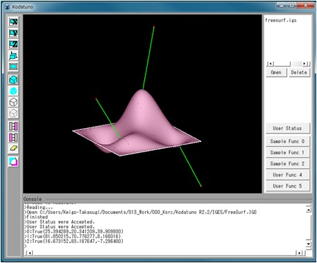
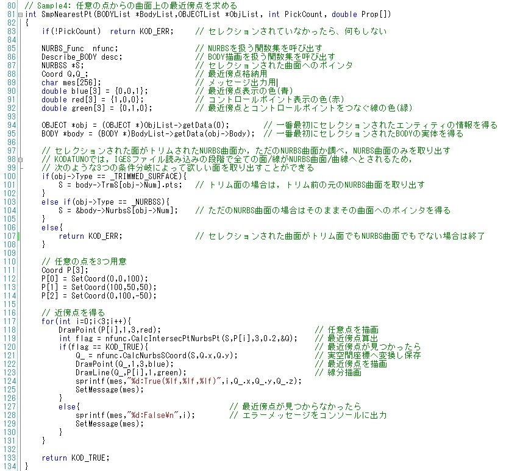

|
|
|
Prev
Index
Next |
(Ex. 4) 任意の点からのNURBS曲面上の最近傍点を求める
ここからは，NURBS曲面の取り扱いについて解説していきます．
"SampleFunc1.cpp"のSmpNearestPt()を実行します．＜実行手順＞
- Kodatunoアプリケーションを起動し, 適当なIGESデータを1つ読み込みます．
- 表示されたBodyから面をピックします．ピックする面の数は1個にしてください．
- "User Status"からMode4を選択し，"Sample Func 1"ボタンを押します．
- 選択した面上に最近傍点が生成されたことを確認してください．

＜ソース解説＞
今回はMode4を選択し，"Sample Func1"ボタンを押しました．これによってSmpNearestPt()が実行されます．
では，SmpNearestPt()を見てみましょう． 今回は約50行とやや長めですが，ほとんどがこれまでの例題で既出のコードですので，難しくはないと思います．
83行目は例によってポカよけです．
85〜92行目では必要な変数の定義を行っています．大半は特に問題ないと思いますが，86行目ではピックされたNURBS曲面の実体を格納する箱を用意しています．
94, 95行目もこれまでと同じです．一番最初にピックしたオブジェクトの情報を取り出し，そのオブジェクトが属するBodyの実体を取得しています．
100〜108行目では，ピックしたオブジェクトが何なのかによって条件分岐をしています．(Ex. 3)ではNURBS曲線を取り出すため， if(obj->Type == _NURBSC)...というコーディングを行いました．今回はNURBS曲面を同様の操作で取り出すことをします．(Ex. 3)の解説でも書きましたが， Kodatunoでの面の取り扱いは，11:_NURBSS, 13:_TRIMMED_SURFACEの2つが存在します．トリム面は1.4 Kodatuno内部でのCADデータの構造 で説明したように，やや複雑な階層構造になっていますが，元を辿ればやはり全てNURBS曲線/曲面で表現されています．
現時点ではあまりトリム面の複雑な階層構造のことは考えずに，トリムされたNURBS曲面なのか，トリムされていない素のNURBS曲面なのか，はたまた全く違うもの を選択してしまったのか，をこの条件分岐によって判定しています．もし，トリムされたNURBS曲面であった場合は，トリムされる前のベースのNURBS曲面を101行目の 操作によって取り出しています．また，トリムされていない素のNURBS曲面の場合は，104行目に示す操作によってピックされたNURBS曲面を取り出すことができます．
111〜114行目では任意の三次元座標値を3つ定義しています．本例ではこの3つの点からの最近傍点を算出します． 117行目より，この3つの点に対し順番に最近傍点を算出していきます．最近傍点の算出は119行目に書かれた，NURBS_Func::CalcIntersecPtNurbsPt()関数によって 行われます．算出に成功すると，Coord Qに最近傍点の座標値が出力されます．ここで注意しなければならないことは，Qには3次元空間座標値(x,y,z)ではなく， NURBS曲面Sのパラメータ値(u,v)がQ.xおよびQ.yにそれぞれ格納されるということです．よって3次元空間座標値を得たい場合は，121行目に示すNURBS_Func::CalcNurbsSCoord() 関数を実行しなければなりません．この関数は指定した(u,v)パラメータにおける3次元座標値(x,y,z)を返す関数です．
描画は，任意の3点を赤色で(118行目)，S上の最近傍点を青色で(122行目），そしてそれらをつなぐ線分を緑色で(123行目)それぞれ描画しています．
また，最近傍点が見つからなかった場合のエラー処理を127行目以降で行っています．
以上で(Ex. 4)の解説を終了します．次はNURBS曲面に対して，UVパラメータで等間隔に分割した点を生成する例題です．
| Copyright(C) Kodatuno Development Team, 2011 | Last modified: Nov. 11, 2011 |